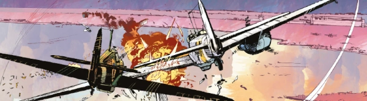

Johnny Redburn is an RAF pilot that winds up fighting with the Russians during World War II. Originally a strip (created by Tom Tully & Joe Colquhoun) in Battle, this has resurfaced as part of Rebellion's Treasury of British Comics stable.
The Megazine reprints were originally published by Titan in 2015.
Art by Keith Burns & Jason Wordie
| Story Title | Parts | Pages | w indicates a wraparound coverCovers | Year(s) | Issues | Writer | Artist | Colourist | Letterer |
|---|---|---|---|---|---|---|---|---|---|
No supertitle.Johnny Red v. Skreamer of the Stukas | 1 | 12 | 0 | 2022 | BatAct22 | Garth Ennis | Keith Burns | Jason Wordie | Rob Steen |
Titan reprint.P7089 | 1 | 22 | Carlos Ezquerra1 | 2023 | M456 | Garth Ennis | Keith Burns | Jason Wordie | Rob Steen |
| The Falcon | 1 | 14 | Keith Burns1 | 2023 | BatAct23.1 | Garth Ennis | Keith Burns | Jason Wordie | Rob Steen |
Titan reprint.Mrs. Redburn's Little Boy | 1 | 22 | Ian Kennedy1 | 2023 | M457 | Garth Ennis | Keith Burns | Jason Wordie | Rob Steen |
Titan reprint.Witches Over Stalingrad | 1 | 22 | Alex Ronald1 | 2023 | M458 | Garth Ennis | Keith Burns | Jason Wordie | Rob Steen |
Titan reprint.The Ghost Lands | 1 | 22 | Kev Walker1 | 2023 | M459 | Garth Ennis | Keith Burns | Jason Wordie | Rob Steen |
Titan reprint.Bastards and Suckers | 1 | 22 | Adam Tooby1 | 2023 | M460 | Garth Ennis | Keith Burns | Jason Wordie | Rob Steen |
Titan reprint.The Iron Man | 1 | 22 | Mick McMahon1 | 2023 | M461 | Garth Ennis | Keith Burns | Jason Wordie | Rob Steen |
Titan reprint.Straight In and No Messing | 1 | 22 | Keith Burns1 | 2023 | M462 | Garth Ennis | Keith Burns | Jason Wordie | Rob Steen |
Titan reprint.Za Rodinu | 1 | 25 | Ian Kennedy1 | 2023 | M463 | Garth Ennis | Keith Burns | Jason Wordie | Rob Steen |
| >> Features << | |||||||||
| Johnny Red | Skreamer of the Stukas | 1 | 1 | 0 | 2022 | BatAct22 | editorial | reprints | <-- | n/a |
| [The Falcon script pages 1-2] | 1 | 2 | 0 | 2023 | BatAct23.1 | Garth Ennis | Keith Burns | Jason Wordie | n/a |
| year | episodes | pages |
| 2012 | 0 | 0 |
| 2013 | 0 | 0 |
| 2014 | 0 | 0 |
| 2015 | 0 | 0 |
| 2016 | 0 | 0 |
| 2017 | 0 | 0 |
| 2018 | 0 | 0 |
| 2019 | 0 | 0 |
| 2020 | 0 | 0 |
| 2021 | 0 | 0 |
| 2022 | 1 | 12 |
| 2023 | 9 | 193 |
| 2024 | 0 | 0 |
| 2025 | 0 | 0 |
| 2026 | 0 | 0 |
| 2027 | 0 | 0 |
| 2028 | 0 | 0 |
| 2029 | 0 | 0 |
| 2030 | 0 | 0 |
| 2031 | 0 | 0 |
| 2032 | 0 | 0 |
| 2033 | 0 | 0 |